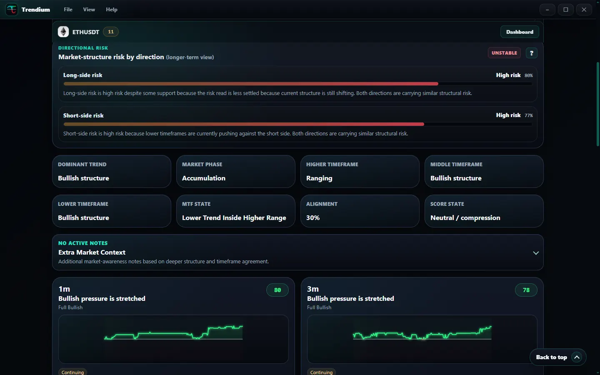
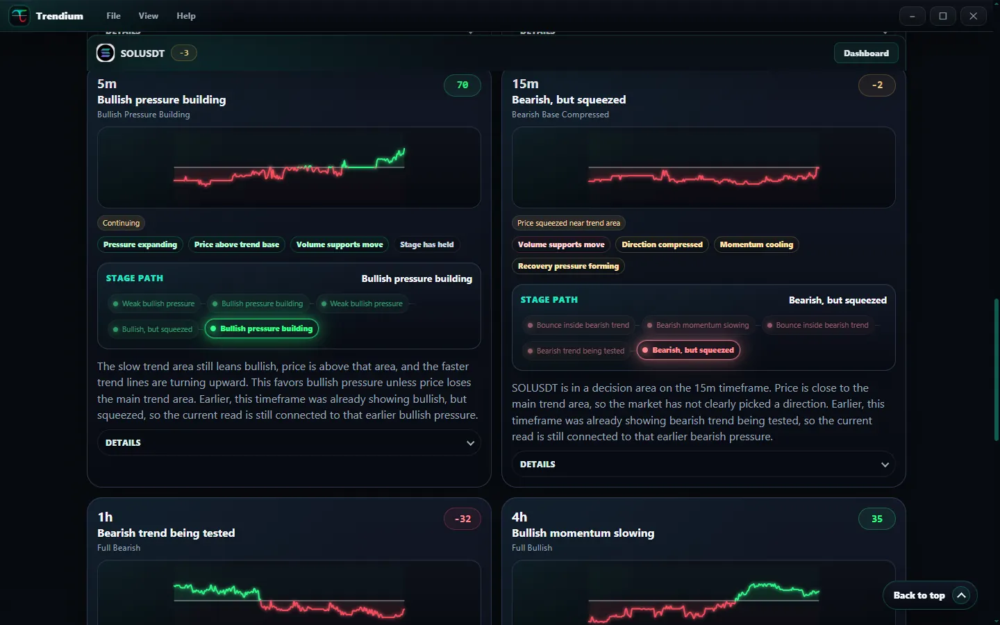
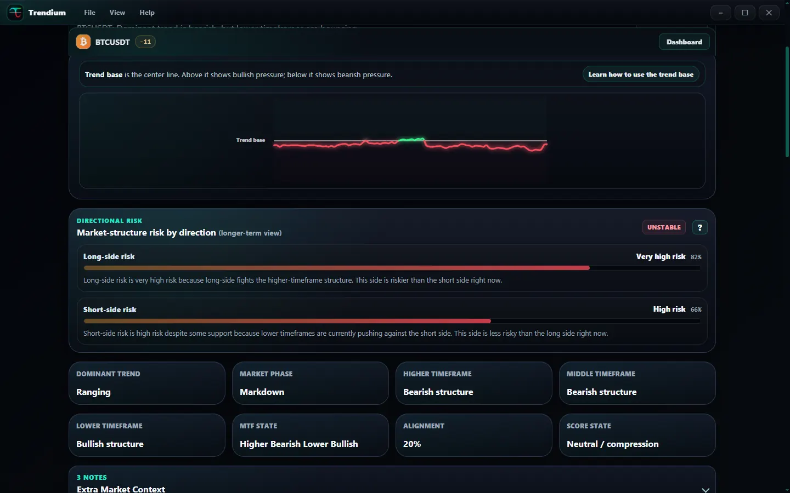
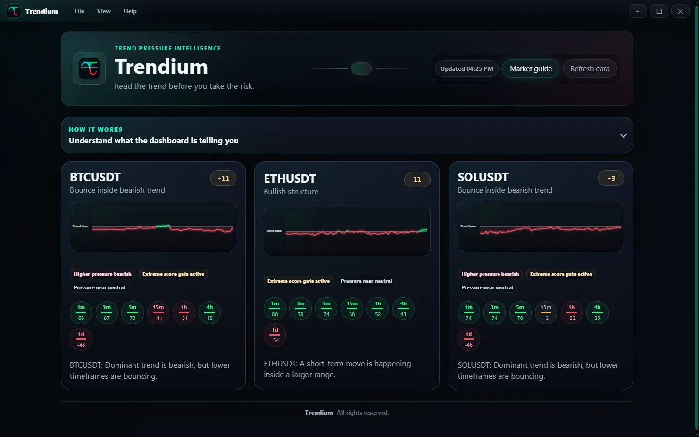

Card hierarchy
Coin cards, summary panels, and detail sections separate overview scanning from deeper analysis.
Product Design · Interface System
The dashboard and component language behind Trendium: trend pressure, market phase, timeframe agreement, directional risk, and score states organized into a clearer product experience.

Challenge
The product needed to show complex indicator and timeframe behavior without burying users in raw chart noise. Every visual pattern had to support interpretation, comparison, and responsible language.
System Decisions
Coin cards, summary panels, and detail sections separate overview scanning from deeper analysis.
Scores, pills, and risk meters make status readable while avoiding aggressive trading commands.
Navigation and visual grouping help users compare short, mid, and longer market context.
Plain-English explanations support learners without flattening the product into generic tips.
Final Execution



Process
System Details


Outcome
The released interface gives Trendium a scalable visual system for explaining market context across overview, detail, and education states while preserving cautious, responsible product framing.